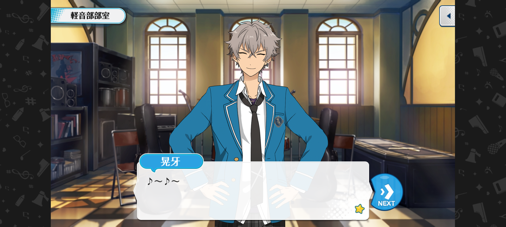
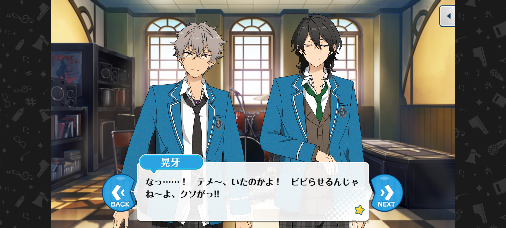
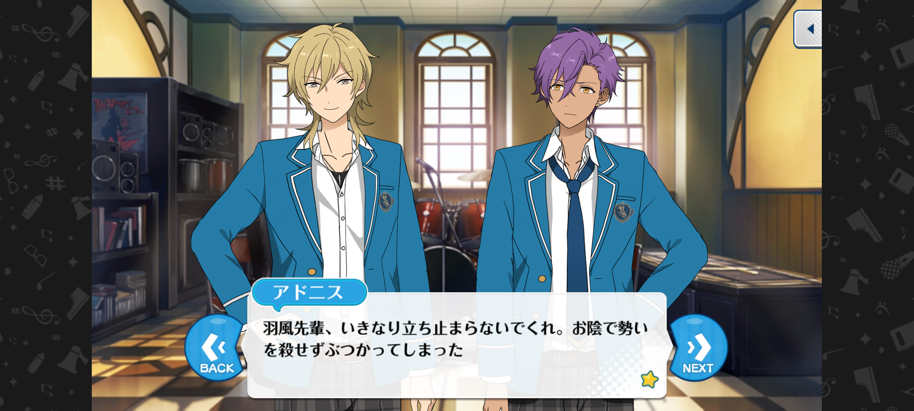
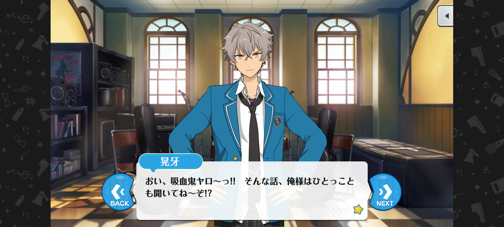
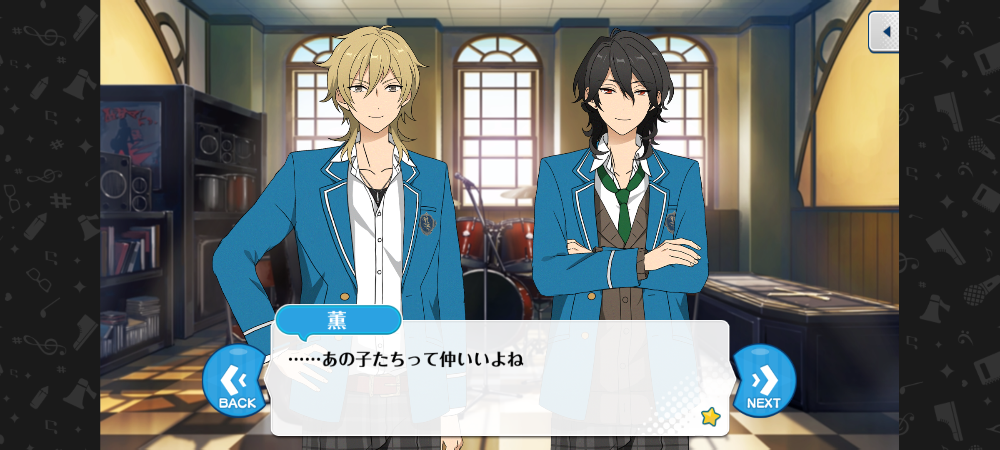

Scout! Amusement Park Show
Amusement Park Show – Chapter 1


Season: Winter
Location: Light Music Clubroom

Koga: ♪~♪~
(Since it's winter break, that shitty vampire bastard's nowhere to be seen. Nor are those twins I can never tell apart.)
(I've got the place all to myself! Time to pour my heart and soul into this guitar solo...♪)

Rei: Yaaawn...♪ My, my, what a racket. Is it lunchtime already?
Koga: Gah...! You're here?! You scared the shit outta me!!
...Tch. Thought I had the place all to myself, but that damn vampire's gotta come and ruin it.
You know it's winter break, right? Go home and get some sleep. Keep rottin’ away in that coffin and you'll wreck your health.
Rei: Oh, Wanko. Are you worried about me? You always act as though you can't stand me, yet what a kind-hearted child you are...♪
Koga: Haaah?! Why're you lookin' at me like I'm your grandson?! Are ya makin' fun of me?!
Rei: Goodness, Wanko. Still as quick-tempered as ever, I see. Why not let Ritsu have a little taste of your blood, hm?
Koga: Why the hell would I let Ricchii suck my blood?! Damn, both you Sakuma brothers are always takin' the piss outta me!
Besides, Ricchii only drinks Anzu's blood. Actually, wait... who's even going around drinking people's blood in the first place?!
He does nothin' but talk about her in class. He's got all sorts of weird crap, like a body pillow and emergency rations... It’s straight up impossible to like the guy.
Rei: It seems that having tasted the Little Miss, he has become quite the slave to his desires.
I must admit, I'm rather curious about this taste that Ritsu praises so highly. Though, personally, I can't say I'm fond of blood. It reminds me of rust, you see.
Koga: If you go around suckin' people's blood and end up pukin', don't come cryin' to me! And while we're on the subject, you Sakuma brothers oughta quit leechin' off women!
If you're worried about gettin' anaemic, just eat somethin' nutritious!
Rei: Hmm... I wonder what manner of formidable woman it would take to tame our little Wanko.
Well, if the young lady didn't have quite the nerve she does, I doubt she'd be up to the task of serving as Yumenosaki's producer.
Indeed, Miss Anzu is quite an impressive young woman...♪

Kaoru: Oh~? Were you talking about Anzu-chan just now? Is she here?
Adonis: Hakaze-senpai, please do not stop so suddenly. I was unable to stop in time and ended up bumping into you.
Kaoru: Eww, gross. Who'd be happy about having a guy bump into them~?
Adonis: I-I see. I apologise.
Kaoru: It's fine, it's not like it was your fault. Anyway, is Anzu-chan here? If you are, come out and play with your lovely onii-san~♪
Rei: I'm afraid the Little Miss isn't here. Though, judging by what you just said, I suspect she would have run away if she were...
Kaoru: Eh~? Seriously? That would've worked on any other girl. Well, I suppose Anzu-chan is a rather serious girl.
Am I making you nervous? It's okay, don't be scared. I'll stop being frightening, so why don't you come out now~?♪
Rei: I believe I already told you the Little Miss isn't here, did I not? Kaoru-kun, it is rather early in the day to be going senile, hm...?
Kaoru: It's a little embarrassing being treated like some old man by Sakuma-san.
...But I guess she really isn't here. If she were, I'd be able to smell her.
Ahhh, how am I supposed to find the motivation to do anything without Anzu-chan here~? Sakuma-san, would you mind if I went home?
Rei: Kaoru-kun, you are perfectly free to come and go as you please...
Koga: Then why'd you even bother comin' here in the first place, Hakaze...senpai? And Adonis, too. I thought we had UNDEAD practice today?
Adonis: Has Sakuma-senpai not told you?
Koga: Huh? Told me what?
Adonis: Hakaze-senpai and I decided that we should hold a live performance at an amusement park, so we came here to discuss it.

Koga: Amusement park? Live?
Oi, you damn vampire bastard!! What the hell's going on?! You haven't told me anything about this!
Rei: Oh? Is that so?
Wanko seemed to be having such a lovely time playing his guitar. I was under the impression that we had already discussed it.
My apologies, Wanko. I had no intention of leaving you out. Come here, now. Allow me to cheer you up...♪
Koga: GRAAAH! You think givin' me candy's gonna make everything okay?!
I'm not a kid! I hate being treated like a dog, but being treated like a little kid is ten times worse!
Kaoru: Wan-chan, calm down, okay~? Keep making such a fuss and I'll have to put a collar on you. Got it?
Koga: GyyrAAHHHHH!
Kaoru: Whoa?! Don't try to bite me! Honestly, you're such a violent little thing, Wan-chan~
Adonis: Oogami, Hakaze-senpai is only trying to provoke you. You should not let him get to you.
Koga: (Heavy breathing) !?
Adonis: Oogami
Koga: I get it, I get it! I'm calm, okay?!
...Thanks for that, Adonis. You're a good guy.♪
Adonis: You are always looking out for me. If this is all I can do in return, then I would gladly lend you a hand.
Koga: Adonis, you’re the best…♪
I don't usually make friends with humans, but... I think I can make an exception for you.
You should consider yourself lucky to be my friend. It’s something to be proud of, Adonis ♪
Adonis: ...You consider us friends, Oogami?
Kanzaki has also told me that we are friends, despite my rather brusque nature... I truly am fortunate to have such wonderful friends.

Kaoru: ...Them two seem to be getting along rather well, don't you think?
Rei: Are you feeling a little left out, Kaoru-kun? We could always become just as close...♪
Kaoru: Yeah, no thanks. Getting all buddy-buddy with other guys isn't exactly my idea of a good time, okay~?
Though... I think I understand what Kanata-kun meant when he said his juniors were adorable. Until recently, I just thought they were a bunch of annoying brats.
There's more to Wan-chan and Adonis-kun than meets the eye, don't you think? If they were as obnoxious as they first appeared, I doubt I'd have grown so fond of them.
I joined UNDEAD because I liked being able to do whatever I wanted, whenever I wanted. But lately, we've started to develop something resembling a sense of unity...
I shouldn't like that sort of thing.
So why have I changed my mind? ...It's not something I dislike as much as I thought.